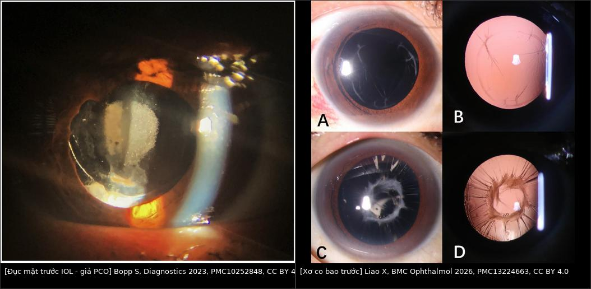
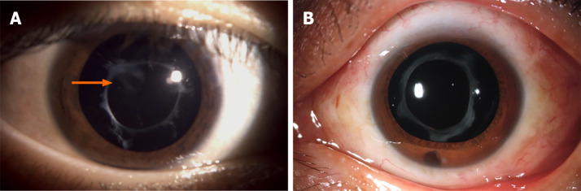
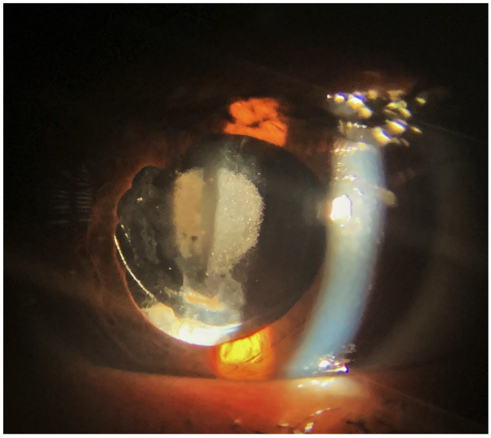
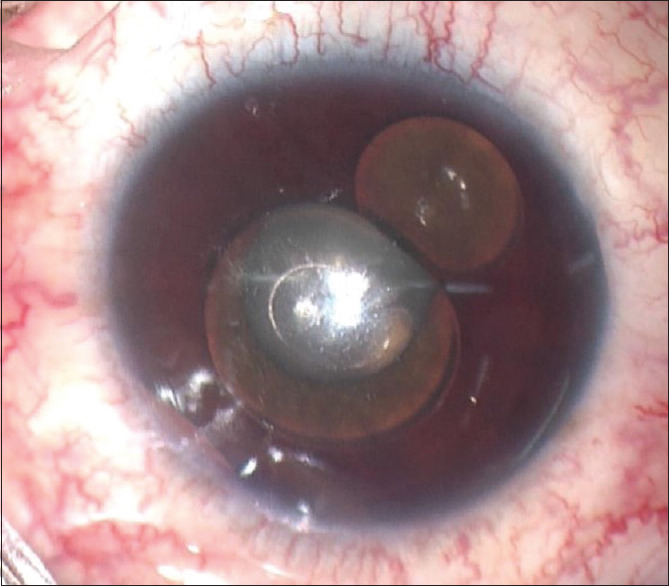
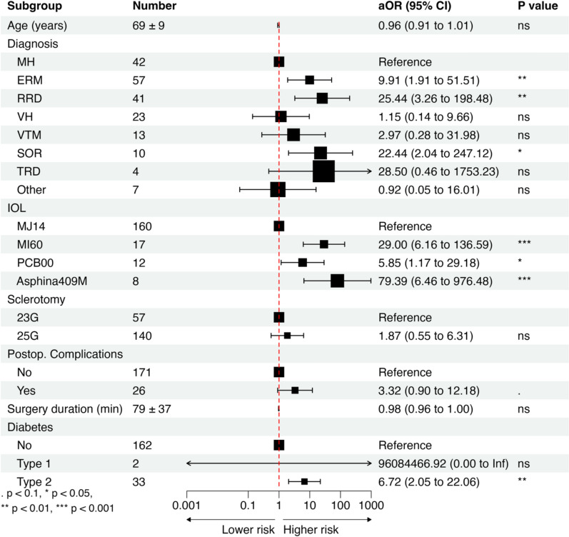

1873 — Bao sau đục (PCO) sau phaco trên mắt bơm dầu: Nd:YAG khi còn dầu hay chờ lấy dầu / PCO in the silicone oil-filled eye
Tags: pattern:duc-bao-sau pattern:ngoc-trai-elschnig pattern:duc-truc-quang pattern:co-bao-truoc pattern:dau-tien-phong pattern:duc-iol vung:the-thuy-tinh vung:tien-phong vung:mat vung:dich-kinh protocol:den-khe protocol:retro-illumination protocol:AS-OCT protocol:YAG protocol:phacovitrectomy score:YAG-capsulotomy
Mức chắc chắn (certainty): tổng hợp y văn (literature synthesis) — nhóm tự biên, đã đối chiếu authorString/PMCID: nguy cơ PCO sau phacovitrectomy 197 mắt (CC BY 4.0, PMC12979282), quản lý bao ở mắt bơm dầu 73 mắt (CC BY-NC 4.0, PMC8462261), xơ bao trước sau phacovitrectomy 70 mắt (CC BY 4.0, PMC13224663), cập nhật Nd:YAG (CC BY-NC 4.0, PMC13676808), PCO tái phát (CC BY-NC, PMC11283270), đục/calcification IOL sau PPV (CC BY 4.0, PMC10252848), dầu tiền phòng gây pupillary block (CC BY-NC-SA 4.0, PMC10062094). Chỗ nhóm suy luận cơ học được ghi rõ "suy luận".
Vì sao bài này quan trọng: bài 1863 quyết định mổ phaco khi còn dầu hay lấy dầu trước; bài 1837 dạy dầu ở tiền phòng phá nội mô; bài 1410 dạy khi nào lấy dầu. Nhưng sau khi đã đặt IOL, câu hỏi tiếp theo ở mọi buổi tái khám là: "trục quang mờ lại — YAG bây giờ khi còn dầu, hay chờ lấy dầu?" Sau phacovitrectomy 27,41% mắt phải YAG trong 6 năm, và nhóm có lấy dầu sau phacovitrectomy có aOR 22,44 so với nhóm mổ lỗ hoàng điểm (PMC12979282) — tức mắt bơm dầu là nhóm PCO nặng nhất. Mở bao sau khi còn dầu có thể đẩy dầu ra tiền phòng (dầu tỷ trọng 0,97, nổi lên trên) và làm IOL nghiêng — trong khi 3,5–4,5 mm lỗ mở là đủ để dầu đi qua nếu không còn hàng rào bao sau.
1. Tổng quan bệnh học – cơ chế hình ảnh: vì sao mắt bơm dầu đục bao sau sớm và dày
- Bệnh học: PCO là quá trình tế bào biểu mô thể thủy tinh (lens epithelial cell — LEC) còn lại ở xích đạo bao trước tăng sinh → chuyển dạng nguyên bào sợi cơ (myofibroblast) → di chuyển ra bao sau. Hai kiểu hình ảnh: ngọc trai Elschnig (đám tế bào cầu, trong, xếp "chùm nho") và màng xơ trắng đục (fibrous plaque, thường trung tâm, dày, khó mở bằng YAG). Ở mắt bơm dầu, màng xơ chiếm ưu thế vì có thêm viêm mạn mức thấp tại mặt phân cách dầu–bao.
- TẠI SAO mắt bơm dầu đục nhanh hơn (bắt buộc giải thích):
- Viêm → xơ hóa qua TGF-β/IL-6. Bong võng mạc và thao tác lấy dầu tạo đáp ứng viêm mạnh, hoạt hóa con đường TGF-β qua IL-6 — đúng cơ chế được nêu cho nhóm có aOR cao nhất trong nghiên cứu 197 mắt (PMC12979282).
- Dầu là "vật thể lạ" thường trực. Dầu silicone n = 1,404, tỷ trọng 0,97, độ nhớt 1.000–5.000 cSt (bài 1863, PMC13635028) → dầu áp sát mặt sau IOL/bao sau, duy trì phản ứng mô và cản trở thanh thải protein trong khoang bao.
- Mất hàng rào dịch kính + oxy hóa. Sau cắt dịch kính, oxy và cytokine khuếch tán tự do vào khoang sau — điều kiện thuận cho LEC tăng sinh; đục thể thủy tinh nói chung xuất hiện ở tới 80% mắt còn thể thủy tinh trong 2 năm sau PPV, và đục dưới bao sau (PSC) 63,6% ở nhóm bơm dầu (bài 1863, PMC12980855).
- Bao trước cũng xơ. Ở phacovitrectomy không đặt IOL, điểm xơ bao trước 6/36 khi đánh bóng bao vs 24/36 khi không (p < 0,001); bơm dầu là yếu tố nguy cơ độc lập (b = 8,734) cùng đái tháo đường (b = 14,634) và không đánh bóng (b = 13,731) (PMC13224663). Bao trước co (phimosis) làm trục quang hẹp dần và IOL bị ép nghiêng — không phải PCO, và YAG không chữa được.
- Ngưỡng định lượng (theo
PROMPT_SYNTHESIZER.md):- YAG capsulotomy sau phacovitrectomy: 54/197 mắt = 27,41% trong 6 năm; so với mổ lỗ hoàng điểm (tham chiếu): ERM aOR 9,91 (1,91–51,51), bong võng mạc aOR 25,44 (3,26–198,48), lấy dầu silicone aOR 22,44 (2,04–247,12), ĐTĐ type 2 aOR 6,72 (2,05–22,06) (PMC12979282).
- Loại IOL quan trọng hơn cả bệnh nền: so với IOL MJ14, MI60 aOR 29,0, Asphina 409M aOR 79,39, PCB00 (acrylic ưa nước phủ kỵ nước) aOR 5,85 — chênh tới 13 lần giữa các IOL cùng dùng (PMC12979282).
- Bao trước: điểm xơ 6 vs 24/36 (đánh bóng vs không); dầu silicone b = 8,734 (PMC13224663).
- Hậu quả khi mở bao sau bằng YAG: rách võng mạc 0,21% và bong võng mạc 0,60% trong 90 ngày, cộng dồn 1,39% ở 12 tháng, tập trung trong 5 tháng đầu; phân tích gộp cho ~1,5 lần nguy cơ bong (PMC13676808). CME sau YAG 1,23% (Steinert) và ~5% trong 3 tháng đầu (nghiên cứu dân số YAG2) (PMC13676808).
- Đục IOL (không phải PCO): 14 mắt phải thay IOL sau PPV, khoảng cách trung bình 20,5 ± 18,6 tháng, 3/14 mắt có bơm dầu; thị lực 0,43 → 0,67 logMAR trước thay và 0,48 sau thay (PMC10252848).
- Vật lý của Nd:YAG trong mắt bơm dầu: YAG (1064 nm) tạo plasma → sóng xung kích + bọng khí, cắt bao bằng quang đập vỡ (photodisruption) nên cần môi trường trong; dầu trong, nên tia vẫn tới bao — nhưng năng lượng và số pulse cao làm tổn thương màng hyaloid trước, được xem là cơ chế tăng co kéo võng mạc (PMC13676808). Ngoài ra mỗi pulse để lại vết khía trên IOL nếu mặt phẳng hội tụ quá gần IOL (IOL pitting) — vì vậy khởi đầu năng lượng thấp nhất hiệu quả và tăng từng bước, không "bắn tổng lực một lần".
- TẠI SAO mở bao sau lại đẩy dầu ra trước (suy luận cơ học, ghi rõ): bao sau là hàng rào cuối giữa khoang dầu và tiền phòng. Khi YAG mở lỗ 3,5–4,5 mm giữa khi đường kính quang học IOL chỉ 6 mm và túi bao 10–11 mm, phần chu vi quanh IOL vẫn thông với khoang sau; dầu nhẹ hơn nước (0,97) nổi lên trên nên dầu ở 12 giờ dễ đi qua lỗ mở và vòng ra trước IOL — đúng bệnh cảnh dầu tiền phòng sau phacovitrectomy (bài 1863, PMC12548765) và ca dầu tiền phòng gây pupillary block IOP 67 mmHg (PMC10062094). Bằng chứng gián tiếp: khi không còn bao (aphakia), người ta chủ động dùng khoang tiền phòng chứa dầu để tamponade đủ — nghĩa là không có bao/IOL hàng rào thì dầu đi ra trước (PMC8673844, chỉ dùng số liệu).
2. Mẫu hình + chẩn đoán phân biệt theo vị trí mờ (Gamut)
- Mẫu hình lõi: mắt đã phacovitrectomy ± dầu, thị lực giảm dần không đau; retroillumination thấy màng trắng/xám sau IOL (PCO) hoặc vòng bao trước co (phimosis); ánh đồng tử mờ nhưng đáy mắt vẫn nhìn được một phần; đồng tử có thể dính sau nếu viêm.
- Gamut theo "mờ ở đâu" (5 tầng):
- Mờ ở bao sau → PCO màng xơ (trung tâm, dày), ngọc trai Elschnig (chu vi lỗ mở cũ), PCO tái phát sau YAG (hiếm ở người lớn, nhưng mắt đã cắt dịch kính là yếu tố nguy cơ) (PMC11283270).
- Mờ ở bao trước → co xơ bao trước/phimosis (vòng xơ dày, có nếp), đục bao trước; YAG không phải điều trị.
- Mờ ở IOL → đục/calcification mặt trước IOL (mảng trắng trong diện đồng tử, bờ haptic sạch), thường 20,5 tháng sau PPV, ưu thế IOL acrylic ưa nước (PMC10252848).
- Mờ ở tiền phòng → dầu nhũ tương/dầu tự do (giọt lấp lánh, váng dầu), màng fibrin, dính mống mắt–IOL; nếu tiền phòng nông + IOP cao → pupillary block do dầu.
- Mờ ở dịch kính/giác mạc → dầu tồn lưu, phù giác mạc do dầu bám nội mô (bài 1837), xuất huyết dịch kính.
- Dấu hiệu hình ảnh giúp chốt: retroillumination (PCO vs màng dầu), AS-OCT (độ dày màng bao sau, khoảng cách bao–IOL, dầu tiền phòng), sinh hiệu chỉnh độ phản xạ trên mặt phẳng IOL (pitting cũ), B-scan khi không nhìn đáy mắt.
- Mnemonic "BAO–IOL–DẦU": Bao sau (PCO), Anh mờ do bao trước co, Optic IOL đục, IOL nghiêng, Dầu tiền phòng, ẦU... dùng để nhắc 6 tầng khi đứng đèn khe: bao sau → bao trước → IOL → tiền phòng → dịch kính → giác mạc.
3. Bảng so sánh phân biệt (ma trận đối chiếu)
| Thực thể (entity) | Hình ảnh / đặc điểm điển hình | Chốt vào (rule-in) | Chốt loại (rule-out) | Gợi ý xác nhận |
|---|---|---|---|---|
| PCO màng xơ (fibrous PCO) | Màng trắng trung tâm, dày, bờ đứt nét, sau IOL; retroillumination chặn sáng | Tiền sử phacovitrectomy ± dầu + màng trung tâm dày + thị lực giảm dần | Màng mỏng đều, không trung tâm + giọt lấp lánh → nghĩ màng dầu/nhũ tương | Đèn khe + retroillumination; AS-OCT đo độ dày màng |
| Ngọc trai Elschnig | Đám cầu trong, vàng-xám xếp chuỗi ở chu vi lỗ bao sau | Hạt cầu dọc bờ lỗ mở cũ, tăng dần theo tháng | Mảng đặc trung tâm → màng xơ, không phải ngọc trai | So ảnh cũ; chụp retroillumination |
| Xơ co bao trước (anterior capsule phimosis) | Vòng xơ dày, nếp co, đường kính mở bao nhỏ dần; có thể ép IOL nghiêng | Đánh bóng bao không làm / bơm dầu (b = 8,734) + vòng xơ co + trục quang hẹp | Bao trước mở rộng, bờ mỏng → không phải phimosis | AS-OCT tiền phòng; đo đường kính mở bao |
| Đục/calcification IOL | Mảng trắng trong diện đồng tử, dừng ở bờ haptic, IOL acrylic ưa nước, 20,5 ± 18,6 tháng sau PPV | Bờ quang học đục, haptic sạch + tiền sử PPV/bơm dầu (3/14) | Đục sau IOL (thấy rõ khi retroillumination, màng ở mặt phẳng sau) → PCO | Đèn khe đảo chiều; chụp mặt phẳng IOL; YAG không có lợi |
| Dầu nhũ tương/màng dầu | Giọt lấp lánh, "váng" mặt sau IOL, có thể tế bào giả ở tiền phòng | Tiền sử bơm dầu + giọt di động theo tư thế + không Tyndall thật | Tyndall thật + đau + dính sau đồng tử → viêm nội nhãn/viêm màng bồ đào | Đèn khe, AS-OCT, B-scan (tăng phản xạ do tán xạ) |
| Dầu tiền phòng (sau YAG/mở bao) | Bọt dầu lớn không nhũ tương ở bờ đồng tử, tiền phòng nông, IOP tăng | Ngay–vài tuần sau YAG/thủ thuật + bọt dầu + IOP > 30 mmHg (ca điển hình 67 mmHg) | Giọt nhỏ < 1 µm, không tăng IOP → chỉ dầu nhũ tương, theo dõi | Đèn khe + AS-OCT; đo IOP 2 mắt; soi góc |
| PCO tái phát sau YAG | Màng mỏng phủ lại lỗ mở + ngọc trai ở bờ | Lỗ mở từng thông rồi mờ lại; mắt đã PPV, cận thị cao, ĐTĐ, IOL nước cao | Mờ do dầu/IOL (không phải bao) → không YAG lần 2 | So ảnh ngay sau YAG; AS-OCT |

Trái: đục mặt trước IOL — mảng trắng trong diện đồng tử nhưng bờ haptic sạch, đục dừng ở mặt phẳng IOL (Bopp S et al., Diagnostics 2023, PMC10252848, Fig. 4, CC BY 4.0). Phải: xơ co bao trước sau phacovitrectomy — (A, B) xơ nhẹ–trung bình, (C, D) xơ nặng có nếp co (Liao X et al., BMC Ophthalmol 2026, PMC13224663, Fig. 1, CC BY 4.0). Ảnh ghép letterbox, không crop.Ba dấu hiệu định vị màng mờ (đọc chuẩn xác)
- Mặt phẳng mờ so với IOL: màng sau IOL (PCO) di chuyển ngược chiều với IOL khi đảo chiều đèn; màng trên IOL (đục IOL/fibrin) di chuyển cùng mặt phẳng quang học.
- Bờ tổn thương: đục IOL dừng ở bờ haptic; PCO lan tới xích đạo bao (không có bờ haptic).
- Đáp ứng YAG: PCO mở ngay tại chỗ bắn (thấy mảnh bao trôi); đục IOL chỉ bị khía/pitting — nếu "YAG không ăn", nghĩ lại chẩn đoán trước khi bắn thêm.
4. Protocol: chuẩn bị trước YAG, thông số và quyết định thời điểm
- Trước YAG — bắt buộc ghi đủ 5 mục:
- Thị lực + khúc xạ + IOP hai mắt (theo dõi cả mắt lành).
- Đèn khe + retroillumination + đảo chiều: chốt mặt phẳng mờ (bao sau / IOL / tiền phòng) và đo đường kính vùng mờ (mm).
- AS-OCT tiền phòng: độ dày màng bao sau, khoảng cách màng–IOL, dầu tiền phòng, độ nghiêng IOL.
- Đáy mắt gián tiếp/siêu âm B: võng mạc áp, PVR, dầu còn bao nhiêu, vị trí dầu so với trục quang — quyết định có mở bao ngay hay không.
- Kế hoạch lấy dầu: nếu dự kiến lấy dầu trong ≤ 3 tháng, chờ và mở bao sau ngay trong mổ lấy dầu (một lần vào mắt) thay vì YAG trước.
- Kỹ thuật YAG khi vẫn còn dầu:
- Đường kính lỗ mở 3,5–4,5 mm (đủ trục quang, không mở rộng quá vì lỗ lớn → IOP tăng nhiều hơn và lệch khúc xạ viễn thị kéo dài tới 4 tuần) (PMC13676808).
- Năng lượng khởi đầu thấp nhất hiệu quả, tăng từng bước; tổng năng lượng và số pulse càng thấp càng tốt (liên quan IOP tăng kéo dài, CME, pitting và tổn thương màng hyaloid) (PMC13676808).
- Bắn vòng chu vi trước, trung tâm sau để tránh mảnh bao lớn rơi vào tiền phòng khi còn dầu; không bắn vào vị trí có dầu tiền phòng.
- Dự phòng: hạ IOP bằng apraclonidine trước/sau; NSAID tại chỗ ± corticoid quanh thủ thuật (CME sau YAG 1,23–5%) (PMC13676808).
- Theo dõi sau YAG (quan trọng hơn thủ thuật): ngày 1, 3, 7 đo IOP + tiền phòng (tìm dầu ra trước, phản ứng viêm); tháng 1, 3 OCT hoàng điểm (CME) và soi đáy mắt tìm rách/bong (nguy cơ tập trung 5 tháng đầu) (PMC13676808).
- Phân tầng quyết định (flowchart):
flowchart TD
A["Mắt đã phacovitrectomy + dầu: trục quang mờ lại"] --> B{"Đèn khe + đảo chiều: mờ ở mặt phẳng nào?"}
B -->|Bao sau| C{"Võng mạc áp và ổn định?"}
B -->|Mặt trước IOL| D["Không YAG: theo dõi hoặc thay IOL"]
B -->|Bao trước co| E["Mở bao trước bằng phẫu thuật, không YAG"]
B -->|Dầu hoặc màng dầu| F["Không YAG: rửa hoặc lấy dầu"]
C -->|Không| G["Giữ dầu: YAG 3,5-4,5 mm, năng lượng thấp nhất"]
C -->|Có| H{"Có kế hoạch lấy dầu trong 3 tháng?"}
H -->|Có| I["Chờ: mở bao sau trong mổ lấy dầu"]
H -->|Không| G
G --> J["Kiểm tra ngày 1-3-7: dầu tiền phòng, IOP, phản ứng"]
I --> J
J --> K["Tháng 1 và 3: OCT hoàng điểm + soi đáy mắt tìm rách hoặc bong"]
- Phòng PCO ngay từ thì đầu (bằng chứng mới): cắt bao sau bằng phẫu thuật trong phacovitrectomy (PPSC) không làm tăng phù hoàng điểm (5,7% vs 3,2%, p = 0,37) và không có ca IOL lệch/lệch trung tâm, đồng thời bỏ được nhu cầu YAG sau này (249 mắt; 126 mắt có PPSC) (PMC13630084). Ở mắt bơm dầu, cắt bao sau trong mổ cũng được dùng để tránh PCO (PMC8462261).
5. Biến thể bình thường và cạm bẫy
- "Mờ trục quang" không đồng nghĩa PCO: đục mặt trước IOL (bờ haptic sạch, 20,5 tháng sau PPV) và xơ co bao trước đều giả PCO — YAG không có lợi, thậm chí làm pitting IOL và tăng nguy cơ bong (PMC10252848, PMC13224663).
- Bao trước co là bệnh của "vòng", không phải "màng": đường kính mở bao nhỏ dần theo tuần–tháng, kèm IOL nghiêng; điều trị là mở bao bằng phẫu thuật hoặc đánh bóng bao từ thì đầu (điểm xơ 6 vs 24/36) (PMC13224663).
- Dầu tiền phòng sau YAG có thể không đau ngay: bệnh nhân về nhà "ổn", rồi IOP tăng dữ dội (ca 67 mmHg, thị lực đếm ngón tay); phải hẹn khám ngày 1 và dặn quay lại ngay nếu đau/nhìn mờ (PMC10062094).
- Đừng bắn YAG "thử" khi chưa loại trừ dầu tiền phòng: dầu ở tiền phòng làm tiền phòng nông, tia hội tụ sai mặt phẳng → pitting IOL + tổn thương nội mô; xử trí là đẩy dầu ra sau/rửa tiền phòng, không phải YAG.
- Ngọc trai Elschnig nhỏ, ngoài trục quang: có thể chỉ theo dõi nếu thị lực/độ chói không ảnh hưởng; YAG chỉ để chỉnh thị lực, không phải để "làm sạch hình".
- PCO tái phát sau YAG hiếm ở người lớn nhưng mắt đã PPV là nhóm nguy cơ: nếu lỗ mở mờ lại trong vài tuần, kiểm tra lại IOL và dầu trước khi bắn lần hai (PMC11283270).
- Lấy dầu "đúng lịch 3–6 tháng" không phải lý do để hoãn YAG: ngược lại, nếu sắp lấy dầu thì mở bao sau trong mổ lấy dầu an toàn hơn YAG khi còn dầu; còn nếu võng mạc chưa ổn định, YAG khi còn dầu là lựa chọn để nhìn được đáy mắt (bài 1863).
6. Tự lượng giá — Blind Quiz
Ca 1 — Nam 62 tuổi, phacovitrectomy + dầu 8 tháng. Thị lực 20/80, không đau. Đèn khe: màng trắng sau IOL, retroillumination chặn sáng trung tâm. Võng mạc áp, dầu còn, kế hoạch lấy dầu sau 4 tháng.

- Gợi ý: IOP 15 mmHg, không dầu tiền phòng, AS-OCT thấy màng dày 120 µm sau IOL.
- Câu hỏi: Chẩn đoán? YAG ngay hay chờ? Nếu YAG, đường kính và mức năng lượng?
Bấm để hiện đáp án (findings + chẩn đoán)
- Dấu hiệu: (A) màng bao sau dày trung tâm (mũi tên) sau IOL — PCO màng xơ trên mắt bơm dầu; (B) cùng mắt sau khi cắt bao sau — trục quang trong.
- Chẩn đoán: PCO màng xơ trên mắt bơm dầu. Vì kế hoạch lấy dầu trong 4 tháng và võng mạc ổn định → chờ và mở bao sau trong mổ lấy dầu là lựa chọn ít nguy cơ nhất; nếu cần nhìn đáy mắt trước đó thì YAG 3,5–4,5 mm, năng lượng khởi đầu thấp nhất, theo dõi dầu tiền phòng ngày 1–3–7.
- Nguồn: Jiang B et al., World J Clin Cases 2021 (PMC8462261), Fig. 2, CC BY-NC 4.0; số liệu nguy cơ: Lachota M et al., Int Ophthalmol 2026 (PMC12979282), CC BY 4.0.
Ca 2 — Nữ 58 tuổi, phacovitrectomy + dầu 2 năm (dầu còn). Thị lực 20/30, chói nhẹ. Đèn khe: mảng trắng giữa đồng tử, "không ăn" sau 2 lần YAG ở tuyến trước.

- Gợi ý: mảng trắng dừng đúng bờ haptic; AS-OCT: bao sau mỏng, không dầu tiền phòng; IOL acrylic ưa nước.
- Câu hỏi: Vì sao YAG thất bại? Chẩn đoán thay thế? Xử trí?
Bấm để hiện đáp án (findings + chẩn đoán)
- Dấu hiệu: đục mặt trước IOL — mảng trắng trong diện đồng tử, dừng ở bờ haptic, không có màng ở mặt phẳng bao sau.
- Chẩn đoán: đục/calcification IOL (không phải PCO) — đã gặp ở 3/14 mắt bơm dầu trong loạt thay IOL sau PPV, trung bình 20,5 ± 18,6 tháng; YAG chỉ gây pitting, không cải thiện thị lực. Thị lực 20/30 → theo dõi; nếu giảm nhiều mới thay IOL (thị lực 0,67 → 0,48 logMAR sau thay).
- Nguồn: Bopp S et al., Diagnostics 2023 (PMC10252848), Fig. 4, CC BY 4.0.
Ca 3 — Nam 45 tuổi, phacovitrectomy + dầu 3 tuần, vừa YAG bao sau 2 ngày. Đau dữ dội, nhìn mờ, tiền phòng nông, thấy 2 bọt lớn ở bờ đồng tử. IOP 52 mmHg.

- Gợi ý: giác mạc phù nhẹ, không mủ, không dính sau đồng tử; mắt còn dầu.
- Câu hỏi: Cơ chế? Chẩn đoán? Xử trí thứ tự?
Bấm để hiện đáp án (findings + chẩn đoán)
- Dấu hiệu: bọt dầu silicone lớn, chưa nhũ tương trong tiền phòng ở bờ đồng tử (ảnh gốc ở bệnh nhân còn thể thủy tinh) + tiền phòng nông + IOP 52 mmHg.
- Chẩn đoán: dầu tiền phòng gây pupillary block sau khi mất hàng rào bao sau (YAG). Xử trí: hạ IOP nội–ngoại khoa (acetazolamide, mannitol, thuốc nhỏ), đẩy dầu ra sau bằng viscoelastic/khí, rửa tiền phòng, và lấy dầu nếu tái diễn; ca tương tự trong y văn đạt IOP 67 mmHg và phải PPV + lấy dầu + rửa tiền phòng. Phòng ngừa: hẹn khám ngày 1–3–7 sau YAG, dặn quay lại ngay khi đau.
- Nguồn: Al-Habsi SH, Al-Abri MS, Oman J Ophthalmol 2023 (PMC10062094), Fig. 1, CC BY-NC-SA 4.0.
Ca 4 — Bảng nguy cơ: đọc forest plot của 197 mắt phacovitrectomy.

- Gợi ý: tham chiếu = mổ lỗ hoàng điểm; trục ngang log, phải = nguy cơ cao hơn.
- Câu hỏi: Nhóm bệnh nền nào nguy cơ cao nhất? Loại IOL nào cao nhất? Điều này đổi cách chọn IOL thế nào?
Bấm để hiện đáp án (findings + chẩn đoán)
- Dấu hiệu: lấy dầu silicone aOR 22,44 và bong võng mạc aOR 25,44 cao hơn hẳn ERM (9,91) và lỗ hoàng điểm (1,00); Asphina 409M aOR 79,39, MI60 29,0, PCB00 5,85; ĐTĐ type 2 aOR 6,72.
- Chẩn đoán/ứng dụng: ở mắt sắp phacovitrectomy + dầu, chọn IOL ít gây PCO ngay từ thì đầu và cân nhắc cắt bao sau trong mổ (PPSC không tăng CME — 5,7% vs 3,2%) để tránh YAG trên mắt còn dầu.
- Nguồn: Lachota M et al., Int Ophthalmol 2026 (PMC12979282), Fig. 2, CC BY 4.0.
Bài liên quan chéo
- 1863 – Đục thể thủy tinh ở mắt bơm dầu: một thì hay hai thì
- 1837 – Dầu silicone trong tiền phòng & tổn thương nội mô giác mạc
- 1410 – Lấy dầu silicone & dầu tồn lưu
- 1416 – Glôcôm do dầu silicone
- 1432 – Thay dầu silicone: thiếu thể tích & nhũ tương hóa
- 1442 – Mảnh thể thủy tinh còn sót trong tiền phòng
- 1452 – Glôcôm do thể thủy tinh chưa mổ
- 1454 – Đặt IOL ở mắt phacolytic: chọn vị trí
- 1411 – Tăng nhãn áp do corticoid nội nhãn
- 1875 – Phù hoàng điểm dạng nang sau phacovitrectomy trên mắt bơm dầu
Không dùng để chẩn đoán độc lập khi chưa có người hướng dẫn.